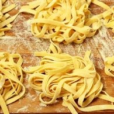
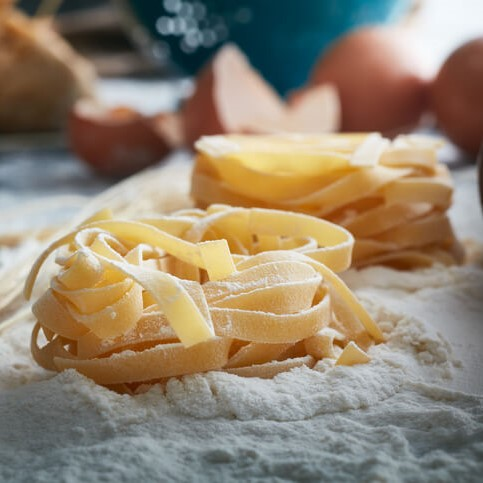
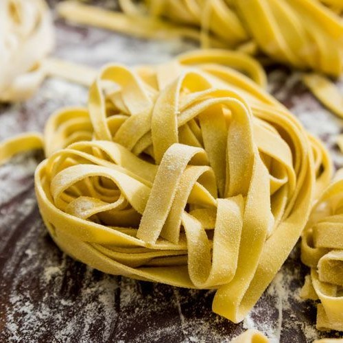

Ingredientes
- 300 g de farinha de trigo de boa qualidade (peneirada)
- 3 ovos grandes ou 4 ovos pequenos
- 1 colher (sopa) de sal
Modo de Preparo
- Misture bem todos ingredientes dentro de uma tigela e sove a massa até desgrudar das mãos.
- Depois, em cima da pia de granito ou mármore, amasse bem a massa durante 10 minutos até ficar bem lisa. Deixe a massa descansar durante 30 minutos.
- Depois de descansar a massa, corte em vários pedaços e abra com um rolo de madeira, jogando farinha sempre.
- Abra a massa o mais fino que puder, quase transparente.
- Depois de aberta a massa, enrole como se fosse um rocambole fininho e corte em tirinhas finas, ou em pedaços para outros preparos como lasanha.
- Numa panela grande, coloque bastante água para ferver e acrescente 1,5 colher (sopa) de sal.
- Jogue a massa nessa panela após levantar fervura e mexa de vez em quando para não deixar o macarrão grudar, quando estiver no ponto desejado, jogue a massa no escorredor de macarrão.
- Use como preferir
MASSA FRESCA
Alguns estudos dizem que o macarrão surgiu na China, tendo sido levado para o ocidente, especificamente para a Itália, por Marco Pólo, por volta do ano de 1295. Já outros indicam que as massas chegaram à Itália pelas mãos dos árabes que estiveram na região da Sicília durante a Idade Média.


Você sabia que: Na Itália existem cerca de 600 tipos diferentes de massa. Sim, é isso mesmo que você leu. Todas elas são divididas em duas categorias. A massa curta, e a massa longa.
